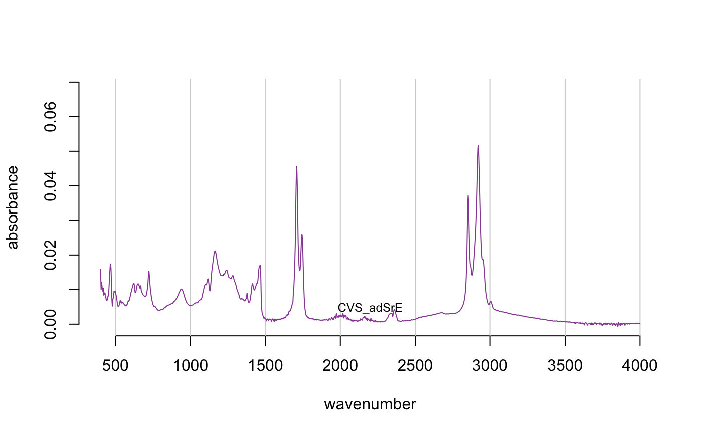

This function carries out normalization of the spectra in a
Spectra object. There are currently four options:
"PQN" carries out "Probabalistic Quotient Normalization" as described
in the reference. This is probably the best option for many data sets.
"TotInt" normalizes by total intensity. In this
case, the y-data of a Spectra object is normalized by dividing
each y-value by the sum of the y-values in a given spectrum. Thus each
spectrum sums to 1. This method assumes that the total concentration of
all substances giving peaks does not vary across samples which may not be true.
"Range" allows one to do something similar to "TotInt" but rather than using the
sum of the entire spectrum as the denominator, only the sum of the given
range is used. This would be appropriate if there was an internal standard
in the spectrum which was free of interferance, and one wanted to normalize
relative to it.
"zero2one" scales each spectrum separately to a [0 … 1] scale.
This is sometimes useful for visual comparison of chromatograms but is
inappropriate for spectral data sets.
normSpectra(spectra, method = "PQN", RangeExpress = NULL)
| spectra | An object of S3 class |
|---|---|
| method | One of |
| RangeExpress | A vector of
logicals (must be of |
An object of S3 class Spectra.
Probabalistic Quotient Normalization is reported in F. Dieterle et. al. Analytical Chemistry vol. 78 pages 4281-4290 (2006). The exact same mathematics are called "median fold change normalization" by Nicholson's group, reported in K. A. Veselkov et. al. Analytical Chemistry vol. 83 pages 5864-5872 (2011).
https://github.com/bryanhanson/ChemoSpec
data(SrE.IR) # Default PQN normalization res1 <- normSpectra(SrE.IR) plotSpectra(res1) # compare to plotSpectra(SrE.IR)# Norm over carbonyl region RE <- SrE.IR$freq > 1650 & SrE.IR$freq < 1800 res2 <- normSpectra(SrE.IR, method = "Range", RangeExpress = RE) plotSpectra(res2) # compare to plotSpectra(SrE.IR)# Check numerically rowSums(res2$data[,RE]) # compare to rowSums(SrE.IR$data[,RE])#> [1] 1 1 1 1 1 1 1 1 1 1 1 1 1 1 1 1